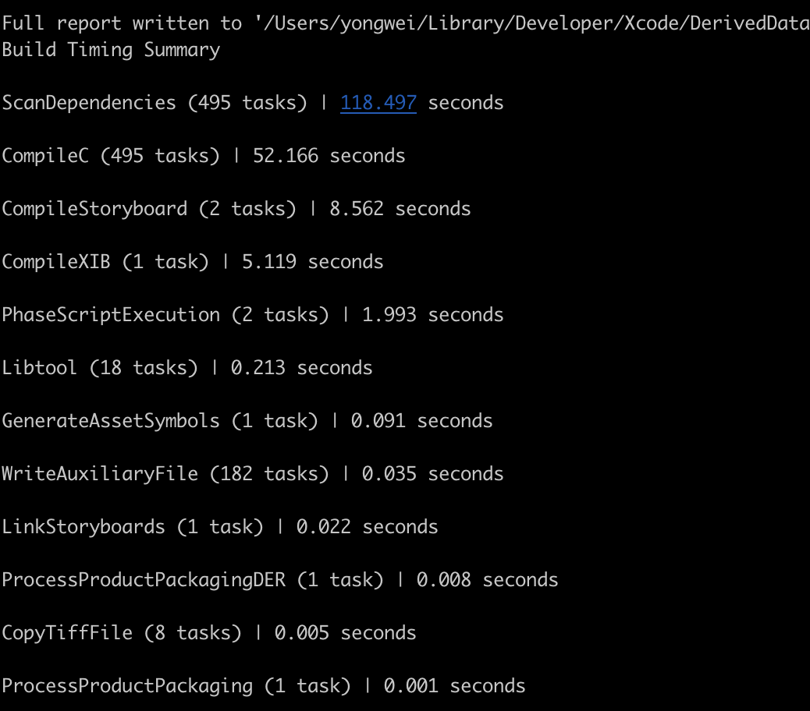
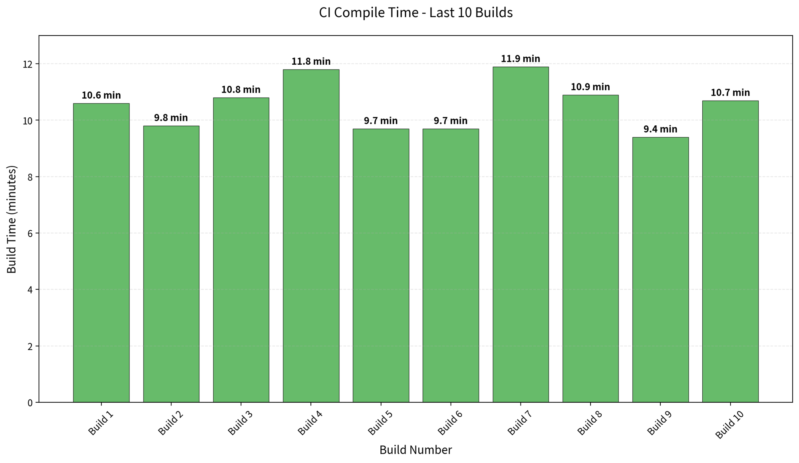
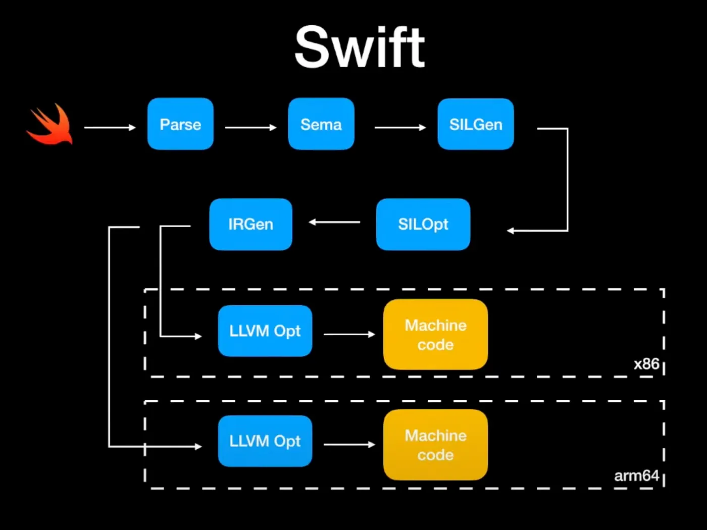
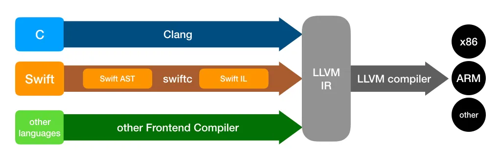
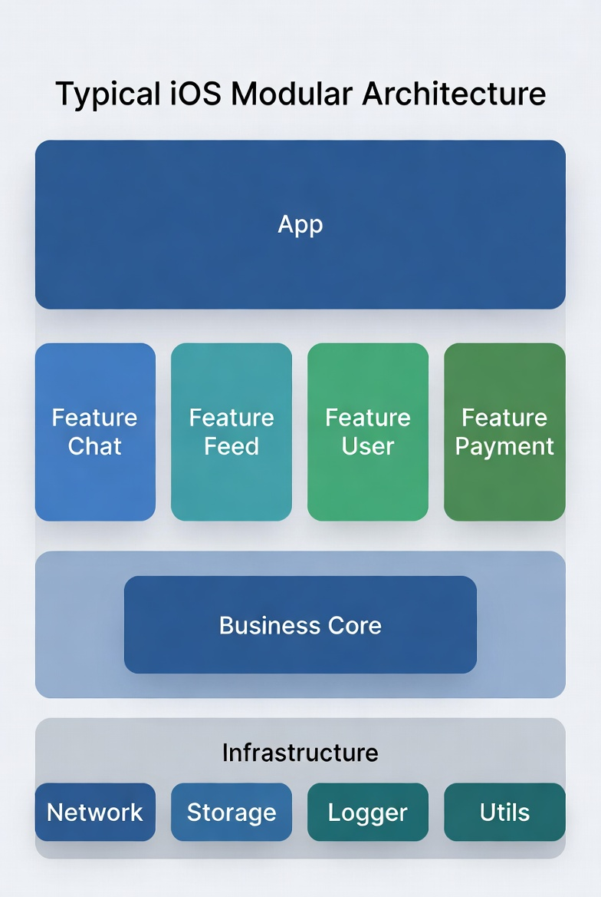
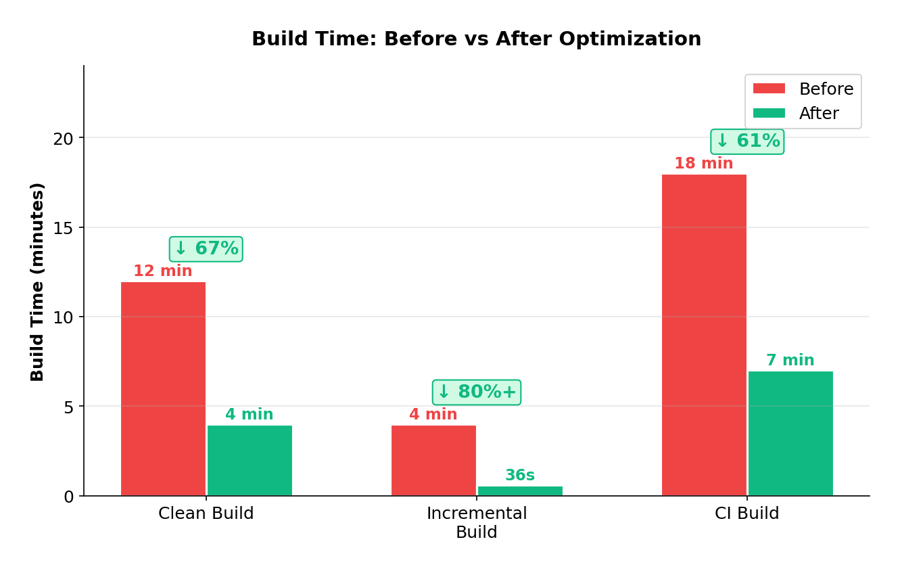

iOS Build Time Optimization - From Clang Modules to Incremental Compilation
In large iOS projects, a clean build can easily take 10–20 minutes. A single bad commit can block the entire team in CI.
This article walks through build system fundamentals and practical optimization techniques, with a real goal: reduce clean build time from 12 minutes to under 3 minutes, and incremental builds to under 40 seconds.
1. Why Builds Get Slow
- Slow builds in large iOS projects are rarely caused by a single issue. It’s usually a combination of factors:
- Large codebase: hundreds of thousands of lines, thousands of files
- Complex dependencies: deeply nested headers; a change in a common header can trigger widespread recompilation
- Mixed languages: Objective-C and Swift bridging, different compiler behaviors
- Linking overhead: large numbers of static libraries and symbols
Before doing any optimization, there’s one critical step: Measure.
2. Measuring Build Time
Optimizing without data is guesswork. Start by establishing a baseline.
2.1 Built-in Tools in Xcode
The quickest way is Xcode’s Build Timing Summary:
1 | Menu Bar → Product → Perform Action → Build With Timing Summary |
Or via CLI:
1 | xcodebuild -workspace MyApp.xcworkspace \ |
The output is shown approximately as follows, which allows you to quickly locate the most time-consuming compilation stage.
The diagram is only a small demo for demonstration purposes

2.2 Finding Slow Files and Functions
Swift compiler flags provide fine-grained diagnostics:
1 | # Print compilation time for each function |
Sort the output to get the 20 slowest functions:
1 | # Extract and show the top 20 slowest items |
If a Swift function takes over 100ms to type-check, it’s usually worth simplifying.
2.3 Tracking Build Time in CI
In a team setting, it’s a good idea to include build time as a metric in your CI pipeline:
1 | # Record build time in CI scripts |
Over time, you can visualize this data to track trends in build performance.
Before optimization:

3. Breaking Down the Build Pipeline
Before optimizing, understand what the compiler actually does.
3.1 Four Stages of Compilation
Both Objective-C and Swift compilation can be abstracted into the following stages:
1 | Source (.m / .swift) |
- Objective-C is handled by the Clang compiler
- Swift is handled by the Swift Compiler (which includes an internal SIL optimization pass)
- Both converge at the Link stage
3.2 Where Does Build Time Go?
Based on real-world project experience, build time is roughly distributed as follows:
| Phase | Share | Notes |
|---|---|---|
| Header Parsing | ~40% | Recursive header expansion; redundant parsing is the biggest cost |
| Code Generation (Compile) | ~30% | Includes Swift type checking, SIL optimization, etc. |
| Linking | ~20% | Especially noticeable in large projects |
| Other | ~10% | Resource processing, copying, etc. |
The core takeaway:
Redundant parsing + dependency explosion = slow builds
This is exactly what Clang Modules and incremental compilation are designed to solve.
4. Clang Modules Optimization
4.1 The Problem with Traditional #import
In the traditional approach, every time the compiler encounters an #import, it recursively expands the header file:
1 | A.m |
If Foundation.h is expanded 50 times in a single compilation unit, the compiler parses the exact same content 50 times.
4.2 How Clang Modules Work
Clang Modules introduce a new mechanism: compiling modules into binary cache files (.pcm).
1 | First build: |
Key features:
- Parsed only once — subsequent builds load the precompiled module cache
- Semantic-level imports — no longer relies on textual substitution
- Automatic dependency management between modules
4.3 Practical Steps
Enable Modules: Confirm the following settings in Xcode:
1 | Build Settings → Enable Modules (C and Objective-C) = YES |
Use @import instead of #import:
1 | // Traditional |
Reduce Umbrella Header Size: Many third-party libraries have umbrella headers that import all headers at once, causing unnecessary dependency bloat. Import only the modules you actually use.
4.4 Common Pitfalls
| Issue | Symptom | Solution |
|---|---|---|
| Macro pollution | Macros defined in module headers cause modules to fail | Move macro definitions to non-module headers |
| Private header exposure | Private modules declared in .modulemap are not properly isolated |
Strictly separate Public / Private headers |
| Unstable Module Cache | Cache path conflicts in CI environments | Set a dedicated MODULE_CACHE_DIR |
5. Swift Incremental Compilation
5.1 Why Swift Builds Slower Than Objective-C
The Swift compiler adds several extra stages compared to Clang:


- Sema (Semantic Analysis): type inference, protocol conformance checking — complex generics cause time to spike
- SIL Optimization: Swift Intermediate Language optimization — in Whole Module Optimization mode, all files are analyzed together
- IR Generation + LLVM: shares the backend with ObjC, but has more upfront overhead
5.2 How Incremental Compilation Works
Swift’s incremental compilation is based on a file dependency graph:
1 | Modify FileA.swift |
The Swift compiler maintains a .swiftdeps file in the build directory, recording each source file’s dependencies. When a file is modified, only the files in the dependency chain are recompiled.
But incremental compilation breaks easily — modifying a widely-referenced public protocol or type can cause nearly every file to be recompiled.
5.3 Making Incremental Compilation Actually Work
Control dependency scope:
1 | // Bad: modifying LoginUser causes all files referencing it to recompile |
Avoid behaviors that break incremental compilation:
- Modifying a public
protocoldefinition → all conformers recompile - Modifying the public API of a heavily-imported module → entire module cascades
- Defining too many
extensions in one file → excessive dependency fan-out
Splitting modules is the ultimate approach: decompose a single target into multiple frameworks / SPM modules, with clear interfaces between them. Modifying one module won’t trigger recompilation of others.
5.4 Choosing Build Modes
| Configuration | Recommended Setting | Reason |
|---|---|---|
| Debug | Incremental Compilation | Fast iteration; only recompile what changed |
| Debug | Whole Module Optimization = NO | Disable global optimization to speed up builds |
| Release | Whole Module Optimization = YES | Trade build time for runtime performance |
| Release | Optimization Level = -O |
Enable LLVM optimizations |
6. Source-Level Build Optimization
6.1 Header Dependency Management
Use Forward Declarations:
1 | // Bad: #import introduces unnecessary compile-time dependency |
Reduce #import Depth: The number of #import directives in a header directly determines that file’s compilation cost. Periodically audit header include graphs and clean up unnecessary dependencies.
6.2 Compiler-Friendly Swift Code
Control Type Inference Complexity:
1 | // Bad: complex chained calls — the compiler must infer each layer's type |
Watch Out for Compile-Time Bombs: Overly long switch statements, deeply nested closures, and enums with many associated values can all cause type-checking time to spike.
6.3 Debug Configuration Speedups
In Debug mode, several settings can significantly reduce build time:
1 | # Only build the active architecture (enabled by default — confirm it's not turned off) |
7. Project Structure Optimization
This is the most effective — but also the most costly — optimization approach.
7.1 Modularization
Split a monolithic project into independent modules:

Key benefits:
- Reduced compile dependencies: modifying Feature Chat only recompiles the Chat module, without affecting Feed
- Higher incremental build hit rate: module boundaries are compilation boundaries
- Parallel compilation: independent modules can be compiled in parallel
7.2 Eliminate “God Modules”
Check whether your project has a “God Module” — typically a Common or Utils module that is depended on by a huge number of files. Every modification triggers widespread recompilation.
Solution:
- Split into smaller modules by responsibility (
UIUtils,NetworkUtils,Foundation+, etc.) - Avoid placing business types in shared modules
7.3 Dependency Direction Control
Keep module dependencies unidirectional and avoid circular dependencies:
Correct: App → Feature → Core → Infrastructure
Wrong: Feature A ↔ Feature B (circular dependency)
Circular dependencies not only break architectural clarity, they also prevent the compiler from building the two modules in parallel.
8. Link Phase Optimization
8.1 Why Linking Is Slow
The core task of the linking phase is symbol resolution: resolving symbol references in each .o file to actual addresses and merging everything into a single executable.
In large projects, linking can account for over 20% of total build time, due to:
- A large number of static libraries (
.afiles) that need to be merged - Massive symbol tables
- C++ template instantiation generating many weak symbols
8.2 Optimization Techniques
Dynamic vs Static Libraries — the Trade-off:
| Approach | Build Time | Launch Time | Binary Size |
|---|---|---|---|
| Static | Slow (merged at link time) | Fast | Supports Dead Code Stripping |
| Dynamic | Fast (compiled and linked independently) | Slow (loaded at runtime) | Cannot be stripped |
For fast iteration during development, consider switching some large modules to dynamic library integration to reduce link time.
Enable Dead Code Stripping:
1 | Build Settings → Dead Code Stripping = YES |
This tells the linker to remove unreferenced code, reducing both final binary size and link workload.
Reduce the Number of Object Files: Merging overly small source files (having one file per class for a 20-line class is over-splitting) can reduce the number of inputs to the linker.
9. CI Pipeline Optimization
CI environments differ fundamentally from local development: there is no cache. This means every build is close to a full clean build.
9.1 Build Caching (ccache / sccache)
ccache can cache compilation artifacts — when source files haven’t changed, the cache is used directly:
1 | # Install |
Caching strategy in CI:
1 | # .gitlab-ci.yml example |
9.2 Split Build Tasks
Split the CI pipeline into multiple stages that run in parallel:
1 | Pipeline |
Build and test can run in parallel: compile a Debug build for testing while simultaneously compiling a Release build for distribution.
9.3 Build Caching and Remote Build
Further exploration directions:
- Bazel: Google’s open-source build system, supports Remote Cache and Remote Build Execution — ideal for very large projects
- Buck2: Meta’s open-source build system, implemented in Rust, excellent performance
These tools have a high adoption cost and are best suited for teams with dedicated build system maintainers.
10. Tools and Observability Summary
| Tool | Purpose | Recommended Scenario |
|---|---|---|
| Build Timing Summary | View time spent in each build phase | Quick daily diagnosis |
-debug-time-function-bodies |
Find the slowest Swift functions | Swift build optimization |
-debug-time-expression-type-checking |
Find the slowest expressions | Generics / closure optimization |
| BuildTimeAnalyzer (Xcode plugin) | Visualize build times | Graphical analysis |
xcpretty |
Format xcodebuild output | CI log readability |
objc_dep.py / swift-dependencies |
Analyze module dependency graph | Architecture governance |
11. Real-World Case Study
11.1 Baseline
A large iOS project (~500K lines of mixed Objective-C + Swift code). Build times before optimization:
| Scenario | Time |
|---|---|
| Clean build | 12 min |
| Incremental build (single file change) | 3~5 min |
| CI clean build | 18 min |
11.2 Optimization Steps
Three rounds of optimization:
Round 1: Low-cost fixes (1 week)
- Verified and enabled Clang Modules configuration
- Disabled dSYM generation in Debug
- Cleaned up 10+ unnecessary
#importstatements - Result: clean → 10 min, incremental → 2 min
Round 2: Swift build optimization (2 weeks)
- Used
-debug-time-function-bodiesto identify the Top 20 slowest functions - Refactored 3 functions with overly complex type inference
- Fixed 2 public type changes that were breaking incremental compilation
- Result: clean → 8 min, incremental → 1 min
Round 3: Modularization (4 weeks)
- Split the monolithic project into 20+ sub-modules (SPM packages)
- Established module dependency rules, prohibiting circular dependencies
- Result: clean → 4 min, incremental → 30~40 s

11.3 Key Metrics
| Metric | Before | After | Improvement |
|---|---|---|---|
| Clean build | 12 min | 4 min | 67% |
| Incremental build | 3~5 min | 30~40 s | 80%+ |
| CI build | 18 min | 7 min | 61% |
12. Best Practices Checklist
-
Enable Clang Modules, use
@importinstead of#import -
Use forward declarations instead of header imports; limit
#importcount in.hfiles -
Disable dSYM in Debug; confirm “Build Active Architecture Only” is enabled
-
Periodically scan for slowest functions with
-debug-time-function-bodies -
Avoid overly deep type inference and nested closures in Swift
-
Keep module dependencies unidirectional; prohibit circular dependencies
-
Regularly audit “God Modules” and split them into single-responsibility sub-modules
-
Introduce build caching in CI (ccache / sccache)
-
Include build time as a CI monitoring metric with alert thresholds
13. Conclusion
Build optimization is not a one-time task — it’s an ongoing engineering practice that requires continuous maintenance. As codebases grow, without a mindset for build time governance, projects will inevitably get slower over time.
The core approach can be summarized in three principles:
- Measure first, then optimize — optimization without data is guesswork
- Reduce redundant work — whether it’s module caching, incremental compilation, or ccache, the essence is making the compiler do less repeated work
- Control dependency scope — the narrower the dependencies, the smaller the blast radius of changes, and the faster the builds
I hope this article provides a systematic reference framework for your build optimization efforts. If you have better practices or experiences, I’d love to hear about them.
14. References
Precompiled Header and Modules Internals — Clang 23.0.0
clang - the Clang C, C++, and Objective-C compiler — Clang 23.0.0
Building Faster in Xcode - WWDC18 - Videos - Apple Developer
Improving the speed of incremental builds | Apple Developer Documentation